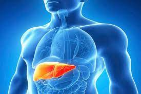

| Técnica utilizada para la fabricación del órgano | |
| Actualmente, uno de los campos de estudio más importante para la bioingeniería tisular es la bioingeniería tisular hepática, tanto por su relevancia clínica y epidemiológica como por los últimos avances logrados. Los órganos y organoides obtenidos por bioingeniería permitirían examinar los efectos de los nuevos fármacos, su toxicidad y mecanismos celulares de una manera más fiel a la realidad. Su objetivo es acabar con las interminables listas de espera para trasplantes, y conseguirlo con órganos obtenidos por bioingeniería , idóneos en su tamaño, genética e inmunidad, que permitan incluso evitar la inmunosupresión de por vida de los receptores de trasplantes . Con las terapias celulares pretenden evitar el avance de un daño a un fallo hepático que requiera trasplante. Actualmente aún es un objetivo lejano, pero los ensayos de fármacos con cultivos celulares y órganos obtenidos por bioingeniería están mucho más cerca y supondrán un gran avance clínico en esta dirección . La Ingeniería Biomédica, como algunas otras ciencias, vislumbra nuevos retos para el futuro. Por ejemplo, la creación de hígados artificiales a partir de células madre . | |
| Beneficios y propuestas de mejora del higado para trasplante. | |
| Dentro de las mejoras del hígado a trasplantar podemos nombrar las siguientes. Trasplante de hígado dividido: el hígado de un donante fallecido se divide en los lóbulos derecho e izquierdo o en el lóbulo derecho y el segmento lateral izquierdo (antes de explantarlo o ex situ) y se trasplantan en 2 receptores Trasplante en dominó: de manera ocasional, un hígado de un donante fallecido se implanta en un receptor con una enfermedad infiltrativa (p. ej., amiloidosis) y el hígado enfermo explantado se da a un receptor anciano, que puede beneficiarse con ese hígado, pero no se espera que viva tanto para sufrir los efectos adversos de la disfunción del trasplante. |  |
| Opinión acerca de la fabricación de órganos para trasplantes. | |
| Mi opinión acerca de la fabricación de órganos para trasplante es que es algo prometedor, alentador y sumamente necesario ya que puede proporcionar soporte vital para prevenir una muerte inminente mientras se espera un trasplante . Además mejora la calidad de vida de una persona que esta crónicamente enferma, y no sólo de ellas sino de sus familiares que sufren por la muerte de un ser querido a la espera de un órgano que muchas veces no llega. Otro beneficio que veo es que este tipo de paciente crónicos siempre están siendo ingresados a los hospitales para que los estabilicen y con la fabricación de nuevos órganos , los pacientes ya se curaría y ya no sería necesario acudir al hospital , ahorrando también al sistema de salud | |
| Datos personales | |
| Nombre: Víctor Manuel Pérez Pasco Grado: 2do A secundaria Colegio: Juan XXIII | |